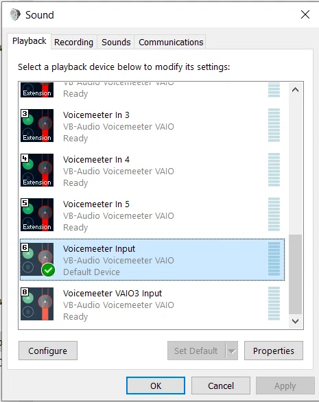
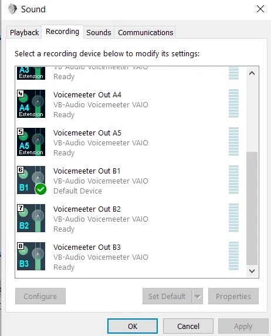
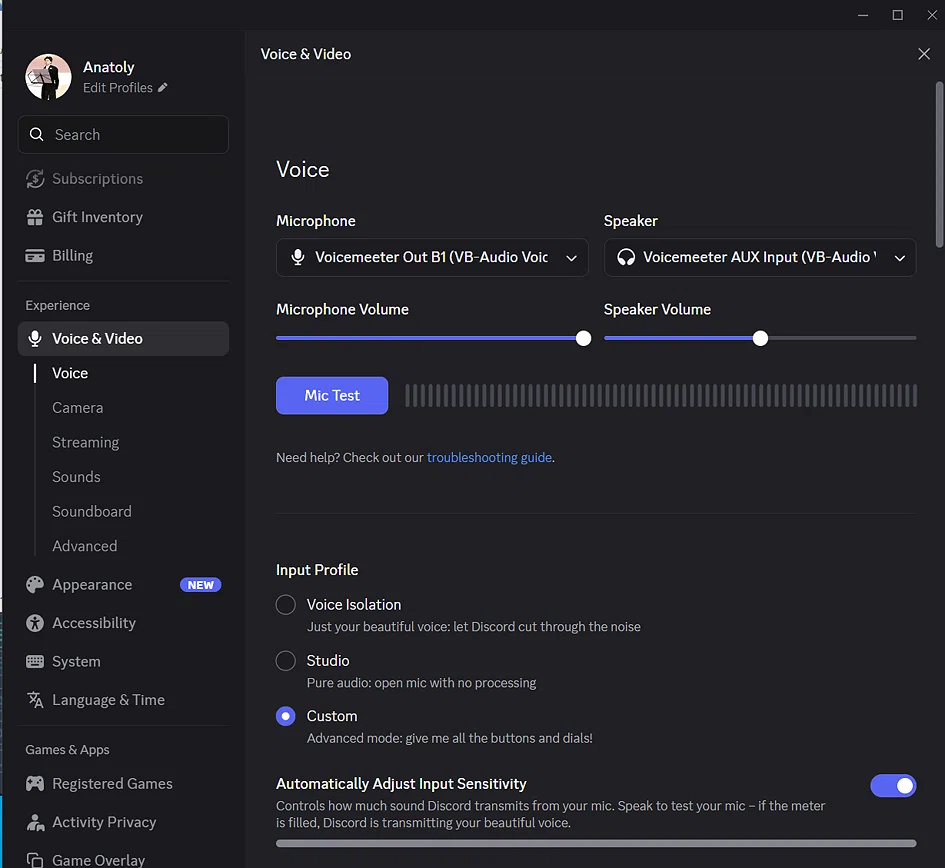
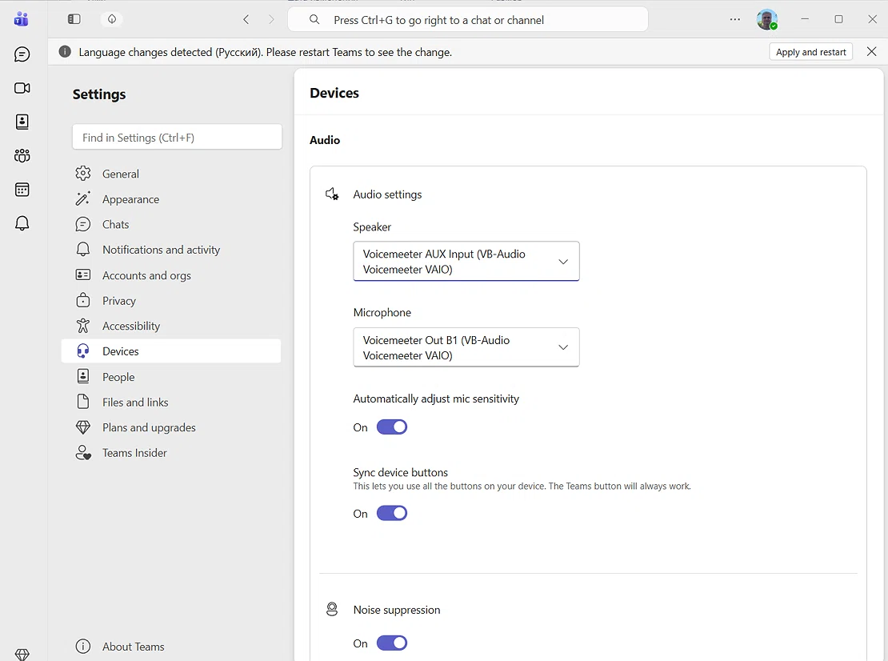
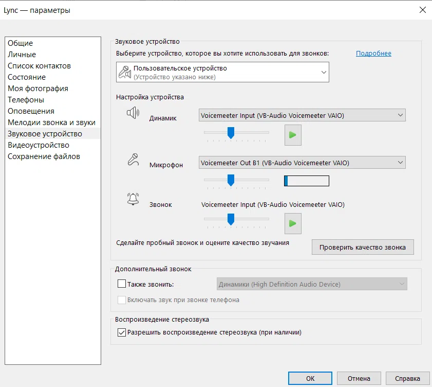

🎛️ VoiceMeeter Banana
Complete Setup Guide
1 Windows — Playback Tab
Where: Right-click the speaker icon → "Sound" → Playback tab.
What it should be:
| Parameter | Value |
|---|---|
| Default device | Voicemeeter Input (VB-Audio Voicemeeter VAIO) |

2 Windows — Recording Tab
Where: Same window → Recording tab.
What it should be:
| Parameter | Value |
|---|---|
| Default device | Voicemeeter Out B1 (VB-Audio Voicemeeter VAIO) |

3 VoiceMeeter Banana — Hardware Input
Where: Top row of tracks in VoiceMeeter.
| Track | Value |
|---|---|
| Stereo Input 1 | Your real microphone (e.g. Microphone (2- USB Audio Device)) |
| Stereo Input 2 & 3 | Empty (not used) |
| Virtual Input | Voicemeeter Input — active |
| Virtual AUX Input | Voicemeeter AUX Input — active (for future streaming) |

4 VoiceMeeter Banana — Hardware Out
Where: Top right corner.
| Button | Value |
|---|---|
| A1 | Your headphones (e.g. Speakers (2- USB Audio Device)) |
| A2 | Your speakers (e.g. Speakers (High Definition Audio)) |
| A3 | Empty (not used) |


5 VoiceMeeter Banana — Track Buttons
Where: A1, A2, A3, B1, B2 buttons on each track.
🎤 Microphone track (Stereo Input 1)
| Button | State | Meaning |
|---|---|---|
| A1 | Off | You don't hear yourself in headphones |
| A2 | Off | You don't hear yourself in speakers |
| B1 | On | Your voice goes to Discord / Teams / Skype |
| B2 | Off | Not needed unless you stream |
💻 System audio track (Virtual Input)
| Button | State | Meaning |
|---|---|---|
| A1 | On | You hear music/game in headphones |
| A2 | On | You hear music/game in speakers |
| B1 | Optional | System audio goes to other people (turn off if not needed) |
| B2 | Off | Not needed unless you stream |
6 VoiceMeeter Banana — Master Section
Where: Sliders A1, A2, A3, B1, B2 at the bottom right.
| Slider | Value |
|---|---|
| A1 | 0 dB |
| A2 | 0 dB (or to taste) |
| B1 | 0 dB (or -2.6 dB) |
| B2 | 0 dB (not used) |
0 dB.7 Discord — Voice & Video
Where: Settings → Voice & Video.
| Parameter | Value |
|---|---|
| Microphone | Voicemeeter Out B1 (VB-Audio Voicemeeter VAIO) |
| Speaker | Voicemeeter Input (VB-Audio Voicemeeter VAIO) |
| Automatically Adjust Input Sensitivity | Off |
| Input Profile | Custom |

8 Microsoft Teams — Devices
Where: Settings → Devices.
| Parameter | Value |
|---|---|
| Speaker | Voicemeeter Input (VB-Audio Voicemeeter VAIO) |
| Microphone | Voicemeeter Out B1 (VB-Audio Voicemeeter VAIO) |
| Automatically adjust mic sensitivity | Off |
| Noise suppression | Your choice |

9 Skype — Audio Device
Where: Settings → Audio device.
| Parameter | Value |
|---|---|
| Speakers | Voicemeeter Input (VB-Audio Voicemeeter VAIO) |
| Microphone | Voicemeeter Out B1 (VB-Audio Voicemeeter VAIO) |
| Ringing | Voicemeeter Input (VB-Audio Voicemeeter VAIO) |

10 Browser (Chrome / Edge)
Where: Settings → Privacy and security → Site settings → Microphone.
| Parameter | Value |
|---|---|
| Microphone access | Voicemeeter Out B1 (VB-Audio Voicemeeter VAIO) |
🔑 Final Signal Flow
⚠️ Important Warnings
0 dB.✅ "Everything Works" Checklist
- Windows Playback →
Voicemeeter Input(default) - Windows Recording →
Voicemeeter Out B1(default) - VoiceMeeter: microphone in Stereo Input 1
- VoiceMeeter: A1 = headphones, A2 = speakers
- VoiceMeeter: B1 is on for the microphone track
- VoiceMeeter: A1 and A2 are on for Virtual Input
- Discord: Mic = B1, Speaker = Input
- Teams: Mic = B1, Speaker = Input
- Skype: Mic = B1, Speaker = Input
- Browser: Mic = B1
If all boxes are checked — setup is complete. You're ready to talk!

Полная инструкция по настройке
1 Windows — вкладка «Воспроизведение»
Где: Правый клик по значку динамика → «Звук» → вкладка «Воспроизведение».
Что должно быть:
| Параметр | Значение |
|---|---|
| Устройство по умолчанию | Voicemeeter Input (VB-Audio Voicemeeter VAIO) |
2 Windows — вкладка «Запись»
Где: То же окно → вкладка «Запись».
Что должно быть:
| Параметр | Значение |
|---|---|
| Устройство по умолчанию | Voicemeeter Out B1 (VB-Audio Voicemeeter VAIO) |
3 VoiceMeeter Banana — Hardware Input
Где: Верхний ряд дорожек в VoiceMeeter.
| Дорожка | Значение |
|---|---|
| Stereo Input 1 | Ваш реальный микрофон (например, Микрофон (2- USB Audio Device)) |
| Stereo Input 2 и 3 | Пусто (не используются) |
| Virtual Input | Voicemeeter Input — активен |
| Virtual AUX Input | Voicemeeter AUX Input — активен (для будущего стрима) |
4 VoiceMeeter Banana — Hardware Out
Где: Правый верхний угол.
| Кнопка | Значение |
|---|---|
| A1 | Ваши наушники (например, Динамики (2- USB Audio Device)) |
| A2 | Ваши колонки (например, Динамики (High Definition Audio)) |
| A3 | Пусто (не используется) |
5 VoiceMeeter Banana — кнопки на дорожках
Где: Кнопки A1, A2, A3, B1, B2 на каждой дорожке.
🎤 Дорожка микрофона (Stereo Input 1)
| Кнопка | Состояние | Значение |
|---|---|---|
| A1 | Выкл | Вы не слышите себя в наушниках |
| A2 | Выкл | Вы не слышите себя в колонках |
| B1 | Вкл | Ваш голос уходит в Discord / Teams / Skype |
| B2 | Выкл | Не нужна, если вы не стримите |
💻 Дорожка системного звука (Virtual Input)
| Кнопка | Состояние | Значение |
|---|---|---|
| A1 | Вкл | Вы слышите музыку/игру в наушниках |
| A2 | Вкл | Вы слышите музыку/игру в колонках |
| B1 | По желанию | Системный звук уходит собеседникам (выключите, если не нужно) |
| B2 | Выкл | Не нужна, если вы не стримите |
6 VoiceMeeter Banana — мастер-секция
Где: Ползунки A1, A2, A3, B1, B2 внизу справа.
| Ползунок | Значение |
|---|---|
| A1 | 0 dB |
| A2 | 0 dB (или по вкусу) |
| B1 | 0 dB (или -2.6 dB) |
| B2 | 0 dB (не используется) |
0 dB.7 Discord — Voice & Video
Где: Настройки → Voice & Video.
| Параметр | Значение |
|---|---|
| Microphone | Voicemeeter Out B1 (VB-Audio Voicemeeter VAIO) |
| Speaker | Voicemeeter Input (VB-Audio Voicemeeter VAIO) |
| Automatically Adjust Input Sensitivity | Выключить |
| Input Profile | Custom |
8 Microsoft Teams — Devices
Где: Настройки → Devices.
| Параметр | Значение |
|---|---|
| Speaker | Voicemeeter Input (VB-Audio Voicemeeter VAIO) |
| Microphone | Voicemeeter Out B1 (VB-Audio Voicemeeter VAIO) |
| Automatically adjust mic sensitivity | Выключить |
| Noise suppression | По вашему выбору |
9 Skype — Звуковое устройство
Где: Параметры → Звуковое устройство.
| Параметр | Значение |
|---|---|
| Динамик | Voicemeeter Input (VB-Audio Voicemeeter VAIO) |
| Микрофон | Voicemeeter Out B1 (VB-Audio Voicemeeter VAIO) |
| Звонок | Voicemeeter Input (VB-Audio Voicemeeter VAIO) |
10 Браузер (Chrome / Edge)
Где: Настройки → Конфиденциальность и безопасность → Настройки сайтов → Микрофон.
| Параметр | Значение |
|---|---|
| Доступ к микрофону | Voicemeeter Out B1 (VB-Audio Voicemeeter VAIO) |
🔑 Итоговая схема сигнала
⚠️ Важные предупреждения
0 dB.✅ Чек-лист «Всё работает»
- Windows Playback →
Voicemeeter Input(по умолчанию) - Windows Recording →
Voicemeeter Out B1(по умолчанию) - VoiceMeeter: микрофон в Stereo Input 1
- VoiceMeeter: A1 = наушники, A2 = колонки
- VoiceMeeter: B1 нажата на дорожке микрофона
- VoiceMeeter: A1 и A2 нажаты на Virtual Input
- Discord: Mic = B1, Speaker = Input
- Teams: Mic = B1, Speaker = Input
- Skype: Mic = B1, Speaker = Input
- Браузер: Mic = B1
Если все пункты отмечены — настройка завершена. Можно общаться!